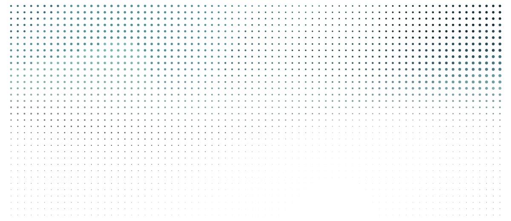

ESTUDIO 09 · LA COSTURA
La portada emite luz. El cuerpo absorbe tinta. Entre los dos no hay una línea: hay puntos que se disuelven.

01 / UNA FORMA DE HACER
La costura no es decoración: es la prueba de que los dos suelos pertenecen al mismo material. Si la página necesitara un borde recto para separarlos, serían dos páginas pegadas.